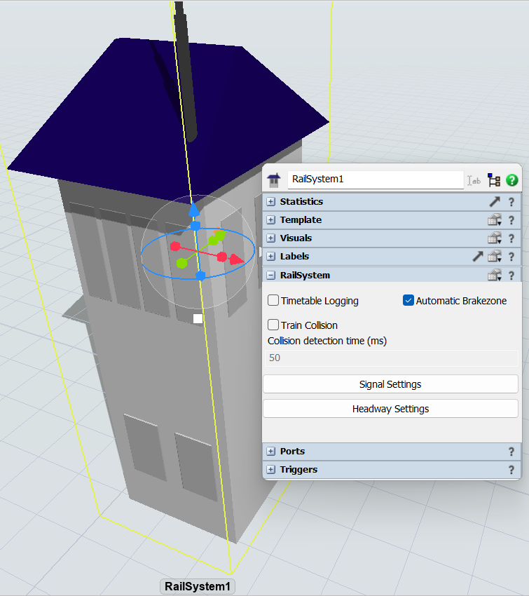
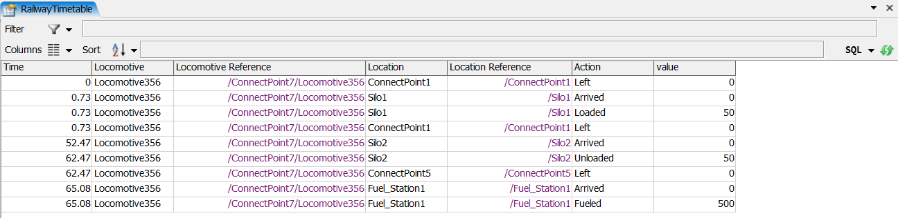

To start using the RailwayTimetable, you need, first, to select the Timetable Logging option in the RailSystem object.

Then, whenever the model is run, the RailwayTimetable will be filled with the information based on the events that happen in the model. It's that simple. Below you can see the table with some example data.

RailwayTimetable is a tool for logging information about the events that happen in the model. It saves the information in a table very similar to the PropertyTable, which means that you can filter and sort the information. The data can, also, be saved in a GlobalTable, if you want to, because it is erased after each run in the model. The RailwayTimetable stores information when the following events happen:
The RailwayTimetable stores the following information: